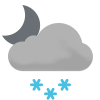

Weather
Germersheim -3.1-6.0
-3.1-6.0

-4.1-2.1 Tue

-5.2--0.4 Wed

-3.7-6.4 Thu

4.3-9.6 Fri

6.5-10.2 Sat

6.1-10.2 Sun

9.6-11.5 Mon

10.1-12.4 Tue

-0.2-5.6 Wed
Erlabrunn -4.2--2.0
-4.2--2.0

-6.3--2.6 Tue

-5.8--0.4 Wed

-4.9-2.5 Thu

4.0-5.1 Fri

3.8-6.4 Sat

3.3-4.8 Sun

4.8-8.6 Mon

2.9-5.8 Tue

-4.7--0.5 Wed
Schmilka -1.0-1.2
-1.0-1.2

-3.2-0.2 Tue

-3.8-1.2 Wed

-4.0-0.8 Thu

6.1-8.4 Fri

4.6-9.6 Sat

3.1-5.8 Sun

6.5-10.5 Mon

5.8-8.5 Tue

-1.4-2.2 Wed